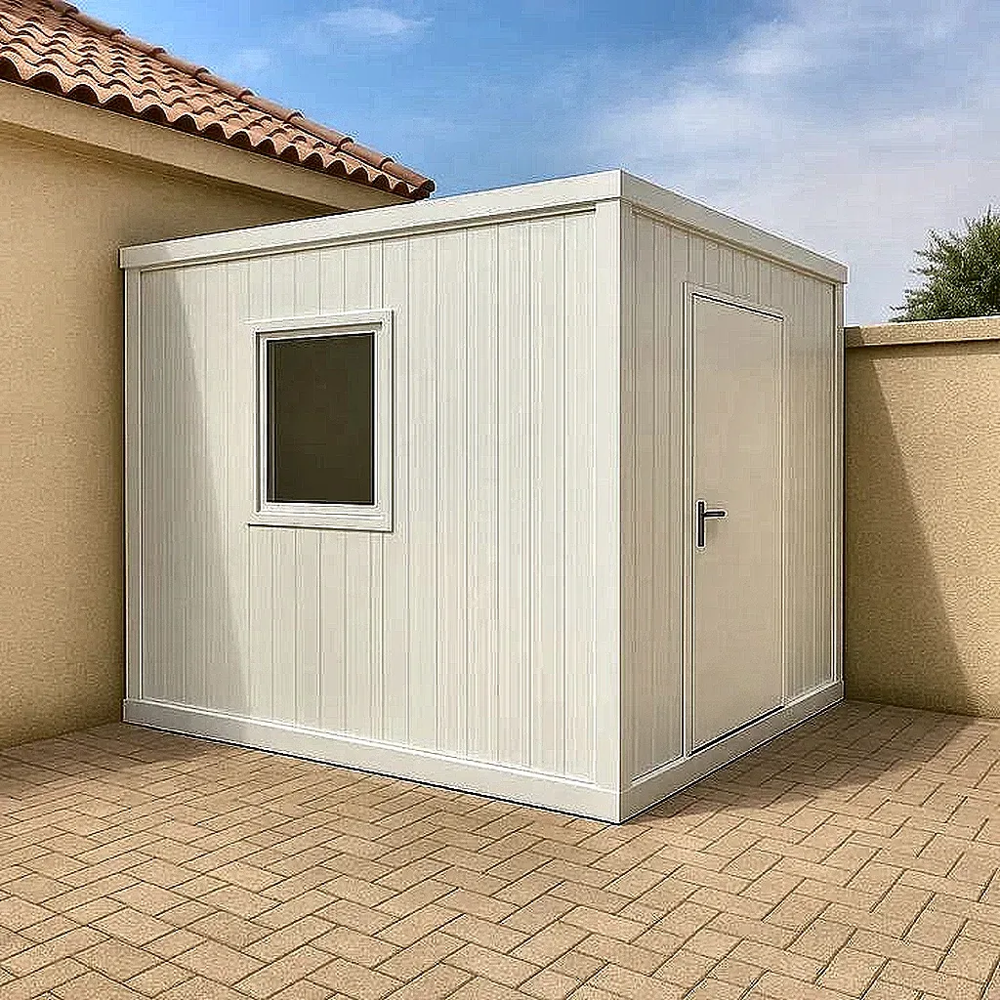
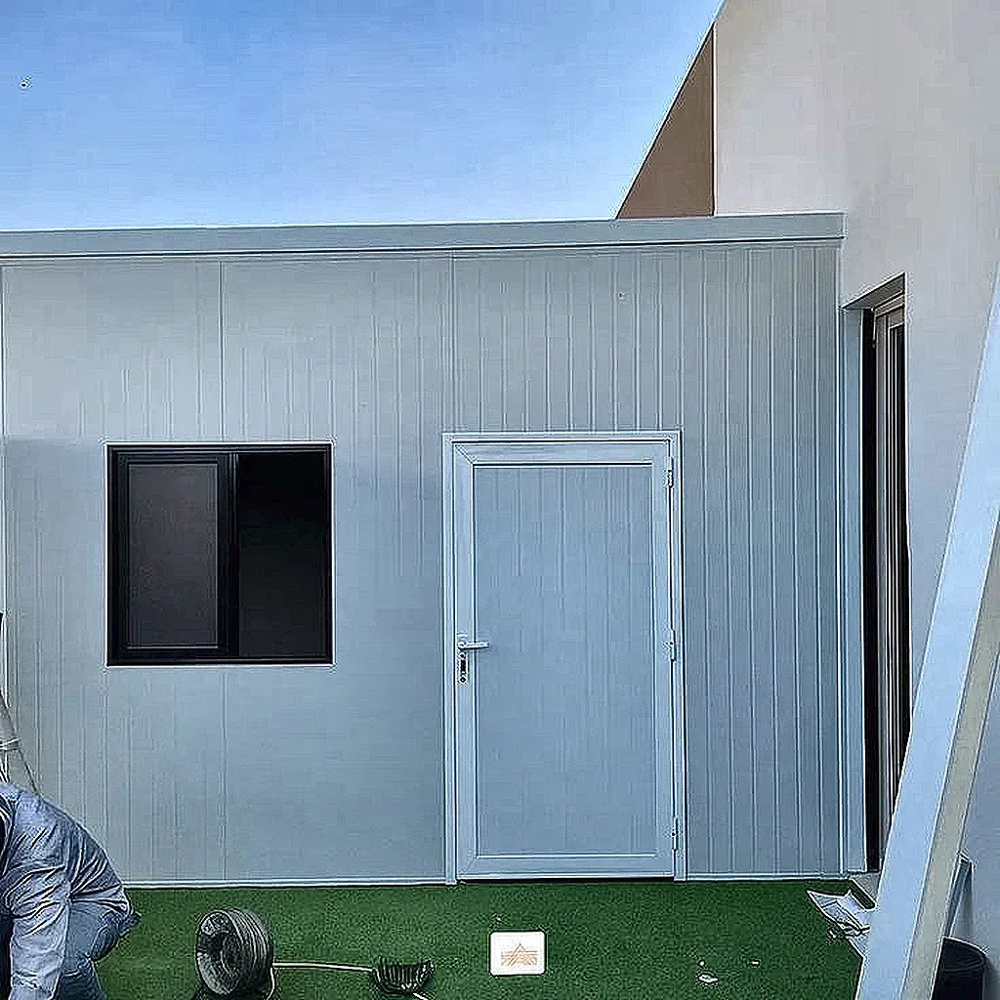

بناء الملاحق الأرضية والعلوية
إنشاء مساحات إضافية معزولة للجلوس أو التخزين دون الحاجة لأعمال بناء وإسمنت معقدة.
يُعد الساندوتش بانل من الحلول العملية في الرياض لمن يبحث عن بناء ملاحق أرضية أو علوية أو غرف خدمات واستراحات خارجية بوقت قياسي. يتميز الساندوتش بانل بكونه نظام بناء متكامل يتكون من طبقتين معدنيتين تتوسطهما مادة عازلة تساعد على العزل الحراري والمائي بشكل فعال، مما يجعله مناسباً تماماً لظروف المناخ في المملكة العربية السعودية.
سواء كنت ترغب في إنشاء غرفة إضافية في السطح، أو ملحق خارجي في ارتداد المنزل، أو مستودع خدمات، فإن الساندوتش بانل يوفر لك ميزة خفة الوزن التي لا ترهق أساسات المباني، مع جودة عزل تغنيك عن أعمال اللياسة والدهان التقليدية المعقدة في مراحل التأسيس الأولى. نحن في مؤسسة إبداع الظل نضمن لك تنفيذ العمل بدقة فنية تراعى تفاصيل الربط والعزل التام للأمطار والحرارة.
لمن يبحث عن خيارات مكملة أو مقارنة، تعرّف على حلول الإسمنت بورد للواجهات والملاحق التي يمكن دمجها مع الساندوتش بانل للحصول على مظهر خارجي مشابه للبناء التقليدي. كما يمكنك الاطلاع على أفكار المجالس والجلسات الخارجية لتنسيق ملحقك الجديد بأفضل التصاميم الحديثة، أو قارن مع خدمات المظلات المودرن إذا كان هدفك هو التظليل فقط.
يقوم فريقنا برفع المقاسات وتصميم الهيكل الحديدي وتحديد سماكة ألواح البانل المناسبة لتحمل الاستخدام المستمر وتوفير العزل المثالي للملاحق والغرف.
صور توضح جودة التنفيذ لألواح الساندوتش بانل في بناء الغرف والملاحق المعزولة داخل الرياض. اضغط للتكبير.




يوفر الساندوتش بانل مرونة هائلة في استغلال المساحات غير المستخدمة في المنازل والفلل. سواء كنت ترغب في تحويل جزء من السطح إلى صالة ألعاب أو مستودع، أو تحتاج إلى بناء غرفة سريعة للسائق في الارتداد الخارجي، فإن هذه الألواح توفر بيئة معزولة تماماً بتكلفة معقولة.
نلتزم في مؤسسة إبداع الظل بتقديم حل بناء عملي يناسب الملاحق والغرف والمساحات الخارجية، مع توريد وتركيب ألواح الساندوتش بانل للأسقف والجدران داخل الرياض، وإمكانية تنسيق التشطيب الداخلي والخارجي بما يتناسب مع تصميم الفيلا ويجعل الملحق جزءًا من شكل المكان لا إضافة منفصلة عنه.
إنشاء مساحات إضافية معزولة للجلوس أو التخزين دون الحاجة لأعمال بناء وإسمنت معقدة.
حلول تغطية سريعة لحماية الأسطح والمستودعات من الأمطار وحرارة الشمس الشديدة.
تجهيز غرف متينة وعملية ومقاومة للعوامل الجوية في فترات زمنية قصيرة.
نقدم خدمات توريد وتركيب الساندوتش بانل لبناء الملاحق والغرف في مختلف أحياء الرياض، مع ضمان دقة المواعيد وسرعة الإنجاز. تشمل مناطق خدمتنا: الملقا، الياسمين، الصحافة، النرجس، قرطبة، غرناطة، العارض، القيروان، ظهرة لبن، الروضة، الرمال، والسويدي.
استكشف الخيارات الإضافية التي تتكامل مع أعمال البناء السريع لتجهيز المساحات الخارجية.
يُستخدم الساندوتش بانل كحل عملي لبناء الملاحق، الغرف الخارجية، غرف السطح، المستودعات الصغيرة، وغرف الخدمات، بفضل عزلها الحراري وسرعة تنفيذها.
نعم، هو مناسب جداً للملاحق والغرف الخارجية لأنه يوفر بيئة معزولة حرارياً ويتميز بخفة الوزن مقارنة بالبناء التقليدي.
نعم، تساعد ألواح الساندوتش بانل على العزل الحراري والمائي بشكل فعال، مما يجعلها خياراً ممتازاً لأجواء الرياض الحارة.
يتميز الساندوتش بانل بتنفيذ أسرع من بعض حلول البناء التقليدي، حيث يتم تركيب الألواح وتجهيز الملحق في وقت وجيز حسب مساحة الموقع.
يمكنك التواصل معنا عبر الواتساب لإرسال صور الموقع والمقاسات التقريبية، وسنقوم بتنسيق معاينة مجانية داخل الرياض لاقتراح التصميم المناسب.